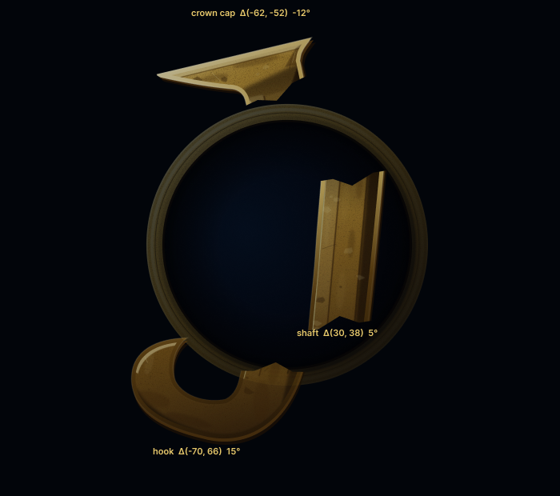
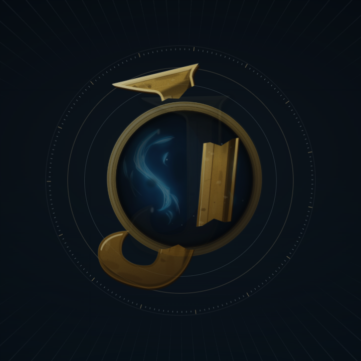
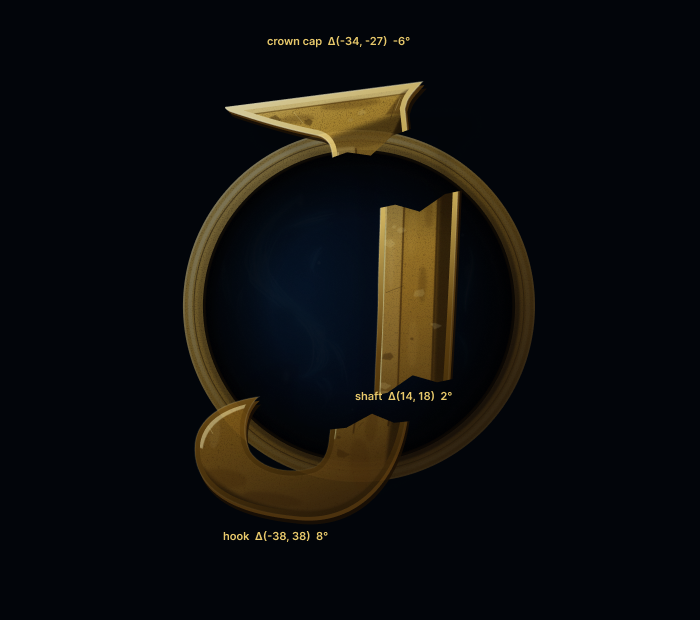
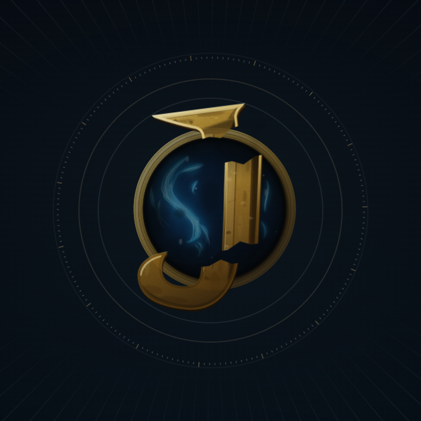
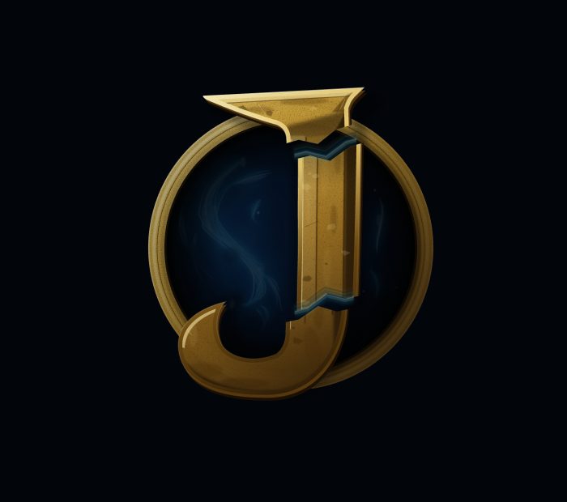
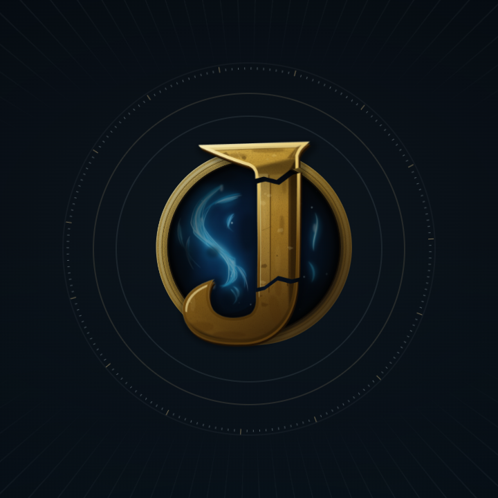
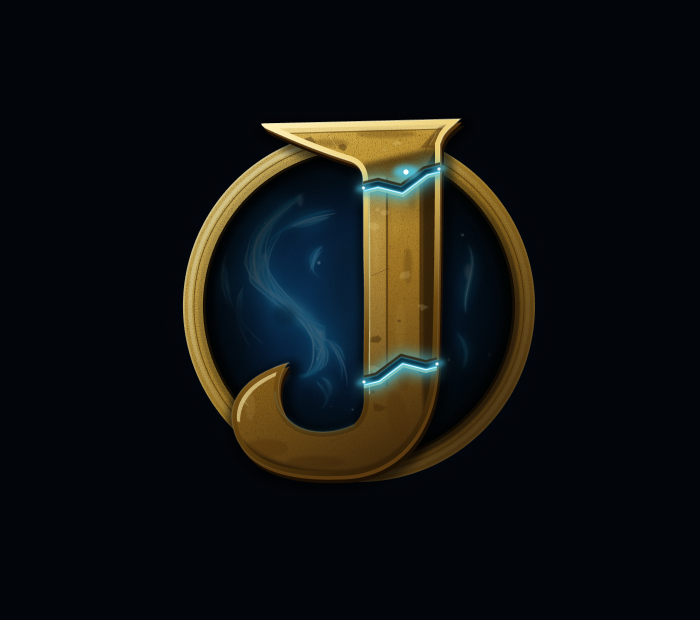
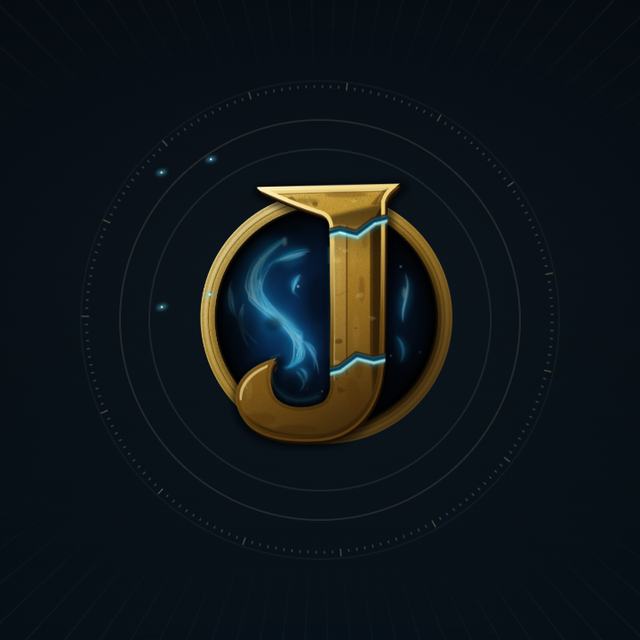
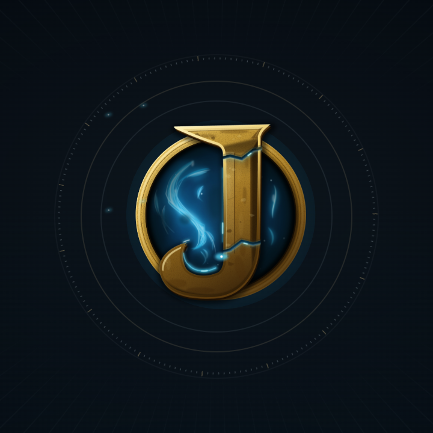
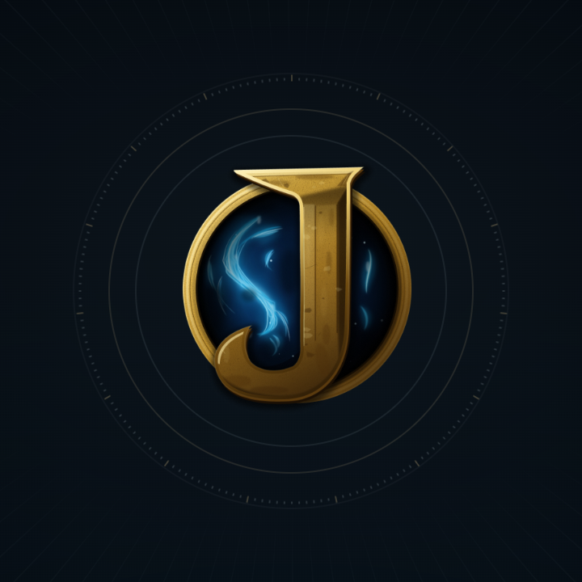

Opening J: continuous assembly review
The seven Figma frames are compared with matching key-pose captures from the installed-Chrome run of the deployed application source. The frames below show one continuous piece animation; they are not sequential still-image swaps.
Feature Preview source: 894f6c9
5.0s Opening
360° clockwise tick turn · 0.6–3.8s
Local Chrome capture · 1920×1080
Uninterrupted Opening through Home
01 · Broken / Dormant · 650ms
Authored Figma pose 
Chrome runtime 
02 · Approach · 960ms
Authored Figma pose 
Chrome runtime 
03 · Alignment · 1,370ms
Authored Figma pose 
Chrome runtime 
04 · Mechanical lock · 2,580ms
Authored Figma pose 
Chrome runtime 
05 · Cyan activation · 3,100ms
Authored Figma pose Chrome runtime — fragments remain through activation 
Previous Preview State 05 capture for timing comparison
06 · Material sheen · 3,720ms
Authored Figma pose Chrome runtime
07 · Settled · 4,100ms
Authored Figma pose Chrome runtime 
Verification note. The source commit is 894f6c9. Cloudflare identifies that commit on the immutable Feature Preview. Its deployed JS and CSS SHA-256 values exactly match the local build used for the Chrome capture. The corrected handoff keeps all J fragments visible through the State 05 pulse (3.20s), reveals the fused canonical artwork beneath them by 3.36s, and clears fragments by 3.60s, before the 3.72s sheen. Static mark comparison: review the accepted J placements and comparison treatments .